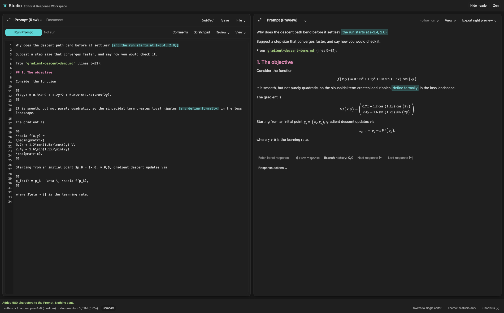
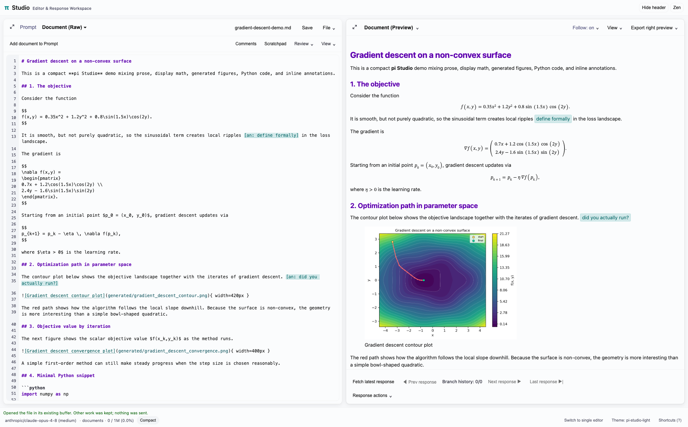
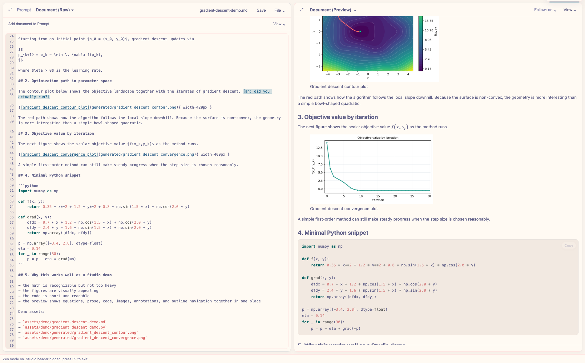

A browser workspace for Pi
pi-studio opens a workspace for Pi in your browser, beside the terminal. Write and run prompts, read responses with rendered math and diagrams, edit and annotate documents, and follow what Pi is doing as it works.
Pi estimates a cooling rate from a prompt. A new Prompt then brings in a paragraph from a note, after reading a linked note and a PDF figure in the Document, and Pi answers the follow-up from the conversation.
68s, real time, no audio, with automated typing.
Prompt and Document
Studio has two editors. The Prompt holds what you send to Pi, and the Document holds the file you’re working on. Each keeps its own edits, preview and place, and Add to Prompt copies the Document’s selection into the Prompt.


The Prompt, with a section added from the Document.


The Document, with its preview.
Themes and Zen mode
Studio follows Pi’s theme. Zen mode hides the header and secondary controls.


Zen mode, in rose-pine-dawn.
Studio also keeps a history of responses and the prompts behind them, shows Pi’s thinking and tool use in Working, browses folders you allow and the current git diff, and exports to PDF or HTML. See the full list of features.
Installation
You need Pi. Pandoc gives full previews and exports, LaTeX gives PDF export, and the REPL needs tmux.
pi install npm:pi-studioThen, in Pi:
/studioStudio listens on 127.0.0.1 only, and its URL carries a token. Anyone with the full URL can run prompts and read or write files, so keep it private. See the commands and the notes on SSH.
REPL pane
The REPL pane runs code in tmux sessions shared with pi-repl and agent-repl. Quick send runs your own cells, and plots your code saves show under the code that made them.
Pi plots a Lorenz orbit in the pane’s Python session, and the operator adds a nearby orbit with Quick send. Claude Code, in a terminal through agent-repl, then plots how far apart they get.
50s, real time, no audio, with automated typing. The view menu’s list is drawn for the recording, since headless Chrome doesn’t draw it.